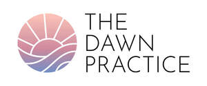
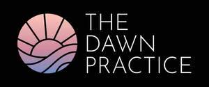

Trade Mark Journal No.2025/028 11 July 2025
UK00004227082 1 July 2025 (35,41,44,45)
Mark 1

Mark 2
Mark 3

- Class 35
- Advertising; marketing; clinic merchandising; market research services; preparation and dissemination of advertising and publicity matter; public relations services; business consultancy and advisory services; business investigations and research; provision of business information; recruitment services; advertising, marketing, business and franchising services in relation to clinics, health clinics, wellness clinics, healthcare, health services, medical clinics, mental health, wellbeing, psychotherapy, psychiatry, naturopathy, osteopathy, occupational therapy, stress management, rehabilitation; advice for consumers; sales promotion; advertising matter (dissemination of -); distribution of samples; providing business advice in the field of social media; advertisement and marketing of social media accounts, texts, blogs and video logs; advertisement and marketing provided by means of blogging; business services relating to health assessment, examination, counselling, diagnosis, and therapy services; the bringing together for the benefit of others by means of a clinic, a variety of assessment services, examination services, counselling services, diagnosis services, and therapy services; the bringing together for the benefit of others by means of a website and app, a variety of assessment services, examination services, counselling services, diagnosis services, and therapy services; information, advisory, and consultancy services for the aforesaid. .
- Class 41
- Education and training; sporting and cultural activities to promote health and wellness; health and fitness training; health and wellness training; health education; publication services; education, training and publication by means of podcasts and videocasts; education services relating to mental health; conducting educational support programmes for patients; publishing of scientific papers; providing electronic publications; publishing of journals, books and handbooks; publication of material relating to health and medical assessment, examination, counselling, diagnosis, and therapy; publication of material relating to clinics, healthcare, mental health, wellbeing, psychotherapy, psychiatry, naturopathy, osteopathy, occupational therapy, stress management, rehabilitation; provision of education and training in relation to medical and health assessment, examination, counselling, diagnosis, and therapy; provision of education and training in relation to clinics, healthcare, mental health, wellbeing, psychotherapy, psychiatry, naturopathy, osteopathy, occupational therapy, stress management, rehabilitation; vocational training and development in relation to health and medical assessment, examination, counselling, diagnosis, and therapy; vocational training and development in relation to clinics, healthcare, mental health, wellbeing, psychotherapy, psychiatry, naturopathy, osteopathy, occupational therapy, stress management, rehabilitation; organization of training and educational seminars, conferences, workshops all related to the topics of medical and health assessment, examination, counselling, diagnosis, and therapy; organization of training and educational seminars, conferences, workshops all related to the topics of clinics, healthcare, mental health, wellbeing, psychotherapy, psychiatry, naturopathy, osteopathy, occupational therapy, stress management, rehabilitation; career counselling in relation to health and medical assessment, examination, counselling, diagnosis, and therapy; career counselling in relation to clinics, healthcare, mental health, wellbeing, psychotherapy, psychiatry, naturopathy, osteopathy, occupational therapy, stress management, rehabilitation; information, advisory, and consultancy services for the aforesaid.
- Class 44
- Clinics; clinics (medical -); clinic services; health care; health care services; provision of health care services; health care services offered through a network of health care providers on a contract basis; health surveys; health screening; health clinic services; professional consultancy relating to health care; technical consultancy services relating to health care; medical health services; medical health assessment services; mental health services; personality testing; services relating to personal behaviour; behavioural modification services; psychotherapy; psychiatry; services of a psychologist; psychological psychiatric testing and services; psychotherapy; naturopathy services; osteopathy services; speech, voice, and hearing therapy; insomnia therapy services; issuing of medical reports; stress management services; occupational therapy services; occupational therapy and rehabilitation; health care relating to relaxation; health care relating to therapeutic massage; health care relating to fasting and remedial exercise; addiction treatment services; animal-assisted therapy; art therapy; music therapy; provision of medical services; provision of medical information; provision of medical treatment; provision of pharmaceutical information; information, advisory, consultancy, assessment and examination, counselling, diagnosis, and therapy services relating to the aforesaid.
- Class 45
- Professional research relating to medical and health assessment, examination, counselling, diagnosis, and therapy; legal and regulatory services in relation to medical and health assessment, examination, counselling, diagnosis, and therapy; long-term welfare and care solution planning; preparation of reports; medico-legal assessment/report services; legal consultancy services relating to franchising, product and service development, planning, research, management, sales, advertisement and marketing; legal, professional, advisory and consultancy services in relation to medical and health care, assessment, examination, counselling, diagnosis, and therapy; establishment, maintenance and management of intellectual and industrial property rights; establishment, maintenance and management of social media accounts and domain name registrations/protection; intellectual property consultancy services; licensing of intellectual property rights; licensing of rights relating to research, know-how and techniques; licensing of rights to discoveries, compounds, services, procedures and systems; internet-based social networking services; on-line social networking services; online social networking services; licensing of rights relating to social media; providing information, news, and assistance in the field of weddings; information, advisory, and consultancy services in relation to the aforesaid.
Munizco Ltd t/a The Dawn Practice
Representative: Cloch Solicitors